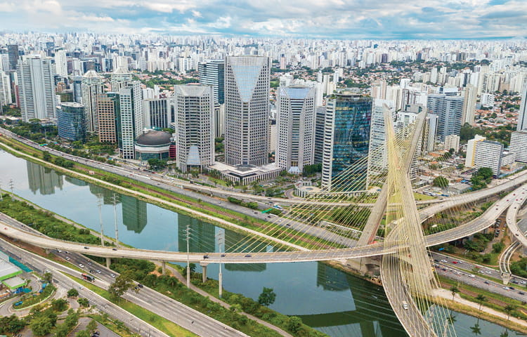

Cidade de osasco

A fundação da cidade de São Paulo aconteceu no local conhecido como Pátio do Colégio, no dia 25 de janeiro de 1554. A edificação foi construída pela missão jesuítica liderada pelos padres José de Anchieta e Manuel da Nóbrega, com a intenção de catequizar as populações indígenas que viviam na região.
A cidade foi, aos poucos, ganhando centralidade econômica e política na região e tornou-se capital da província em 1815. A intensificação dos fluxos de migrantes e do desenvolvimento econômico de São Paulo aconteceu, principalmente, durante o ciclo do café. O avanço da industrialização, juntamente do fenômeno da urbanização, foi consolidando o papel da cidade na economia regional e nacional, chegando, atualmente, à classificação de cidade global.
São Paulo encontra-se numa área em que há a predominância de planaltos. As formações encontradas no município são morros, serras e planícies. O ponto mais elevado da cidade é o Pico do Jaraguá, na Serra da Cantareira, com 1.135 metros.
Parque Ibirapuera
Um dos parque mais famosos da capital paulista, por contar uma natureza incrível e atrações gratuitas. O local e muito aberto e muito bom para a realização de atividades em família e dando opçoes de passeio como o Museu de Arte Moderna e a Fundação Bienal.
Pinacoteca de São Paulo

A pinacoteca de São Paulo que foi construída no final do século XIX, apresenta hoje em dia muitas obras de artes, entre elas alguns artistas brasileiros como Benedito Calixto e Portinari. O prédio em si já é uma obra de arte com sua arquitetura charmosa.
Prefeitos
| Prefeitos |
Partido |
Vice |
| Ricardo Nunes (ATUAL) |
Partido MDB |
Vice nenhum (ATUAL) |
| Bruno Covas |
Partido PSDB |
Vice Ricardo Nunes |
| João Doria |
Partido PSDB |
Vice Bruno Covas |
| Fernando Haddad |
Partido PT |
Vice Nádia Campeão |
| Gilberto Kassab |
Partido PFL(2007), DEM(2007-2011) e PSD(após 2011) |
Vice Alda Marco Antônio |
Dados Técnicos
Aniversário: 25 de Janeiro
undação: 1554
entílico: Paulistano
Área: 1.521,110 km²
PIB: R$ 714,683 milhões (2018) 1º maior PIB do Estado de São Paulo
População estimada (2020): 12,33 milhões de pessoas
IDH 0,805 - elevado
Cidades para ver:
- Ilha Solteira
- Guararema
- Rio das Pedras
- Embu
- Taboão da Serra
- Ubatuba
- Itanhaém
- Assis